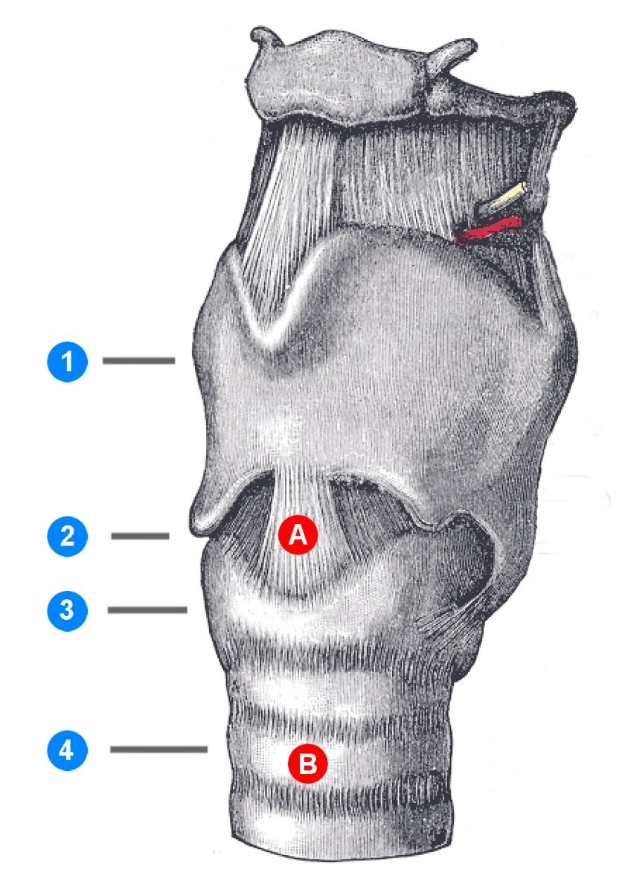
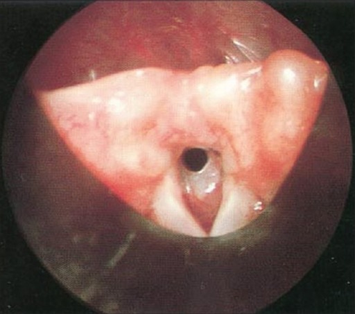
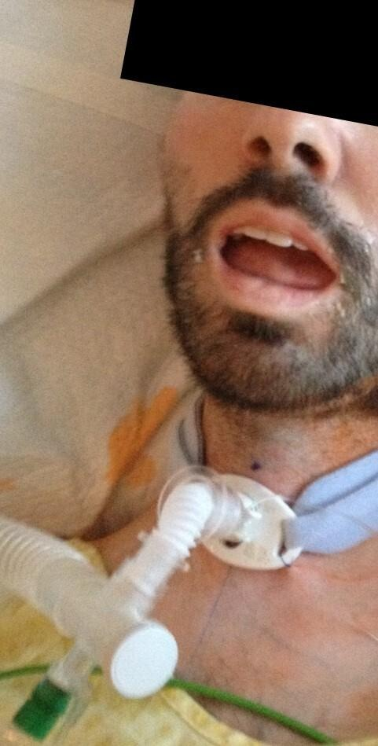
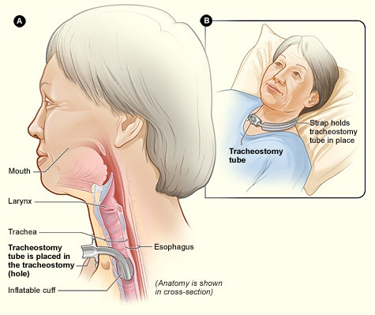
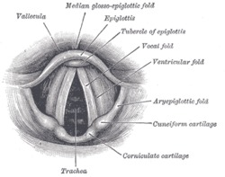

| Konu | Larengotrakeal stenozda silikon T-tüp — cihazın yapısı, endikasyon, yerleştirme, bakım, komplikasyonlar ve trakeotomi kanülünden farkı |
|---|---|
| Sistem | Larengoloji / hava yolu cerrahisi |
| Süre | ~30 dakika |
| Kaynak | Önerci Cilt 5, Bölüm 50 (b.587) ve Bölüm 51 (b.591-604) · Cummings 7. baskı, Bölüm 66 (b.945), Bölüm 67 (b.956-961), Bölüm 210 (b.3112) · Scott-Brown 7. baskı, Bölüm 173 (b.2278) · PubMed 2021-2025 (6 çalışma) · Gün 25, Gün 31 ve Gün 66 notları |
T-tüp bir ameliyat değil, bir cihazdır — ameliyat, onu yerleştirme işlemidir. Elindeki parça tek parça yumuşak silikondan, üç bacaklı bir boru: iki bacağı hava yolunun içinde (biri yukarı, biri aşağı), bir bacağı boyundaki stomadan dışarıda.
Ne işe yarar: darlığın içinden geçip larenks ile akciğer arasında kesintisiz bir tünel kurar. Dıştaki bacağın ucundaki tıpa kapatıldığında hava kordlardan geçer — hasta hem nefes alır hem konuşur. Trakeotomi kanülünden tek farkı, ama her şeyi değiştiren farkı, üstteki bacağıdır.
Ne zaman: larengotrakeal stenozda, rezeksiyona uygun olmayan ya da rezeksiyonun başarısız olduğu hastada; ayrıca genişletme cerrahisinde grefti stabilize etmek için geçici olarak.
Yerleşim kuralı: üst bacağın ucu kordların altında kalmalı. 2025 prospektif verisi net: transglottik yerleşimde komplikasyon %23, infraglottikte %12.
Bedeli: tek lümenli kapalı bir tüneldir — tıkanırsa hastanın başka hava yolu yoktur. Kitap krut oluşumunu “çok ciddi bir dezavantaj” diye tanımlıyor; seride granülasyon %78.
Sorunun çekirdeği burası, o yüzden en baştan: T-tüp, ameliyathanede elinize verilen, avuç içi büyüklüğünde, yumuşak, saydam-beyazımsı bir silikon borudur. Adı şeklinden gelir — yandan bakınca “T” harfine benzer.
Montgomery T-tüpü — takılmadan önce, elinizdeki hâli. (Görsel bu not için çizildi; Önerci Cilt 5 Böl. 51 b.604 ve Scott-Brown Böl. 173 b.2278 temelli.)
“The Montgomery T-tube is a silicone stent with a long central lumen and a smaller lumen projecting from the side of the stent at either a 90 or 75° angle. Its prototype was first described in 1965.” (Scott-Brown's Otorhinolaryngology, 7. baskı, Böl. 173, b.2278)
Üç parçası var, üçünün de ayrı işi:
| Bacak | Nerede durur | İşi |
|---|---|---|
| Proksimal (üst) bacak | Hava yolunun içinde, darlığın içinden geçip subglottise kadar; ucu vokal kordların hemen altında kalır | Farkı yaratan parça. Darlığı köprüler, üst hava yolunu devrede tutar |
| Distal (alt) bacak | Hava yolunun içinde, trakeada aşağı doğru; karinaya değmez | Tüpü aşağıda sabitler, alt hava yolunu açık tutar |
| Eksternal (yan) bacak | Stomadan dışarı, cilt hizasında | Aspirasyon ve acil erişim yolu; ucunda tıpa vardır |
Trakeotomi kanülüne alışkın gözle bakınca eksik görünen şeyler de tanımın parçası: kaf (balon) yok, boyun plakası yok, bağcık yok, iç kanül yok. Tüpü yerinde tutan şey mekanik bir tespit değil, kendi “T” geometrisidir.
Taradığım kaynakların hiçbirinde sayısal çap tablosu yok — ne Önerci, ne Cummings, ne Scott-Brown T-tüpün mm cinsinden çap aralığını veriyor. Kitapların söylediği tek ölçü kuralı şu: “T tüp şeklindeki üst bacağı uzunluğu stentlenecek bölgeye göre ayarlanmalıdır.” Çap seçimi hastanın trakea çapına göre yapılır; katalog numaralarını klinikte kullandığınız ürünün kutusundan doğrulayın.
Bu notu hazırlarken Wikimedia Commons'ta Montgomery T-tüpüne ait serbest lisanslı tek bir görsel bulunamadı — üç ayrı arama hiçbir dosya döndürmedi. Cihazın fotoğrafı telifli katalog ve üretici görsellerinde duruyor. Yukarıdaki çizim bu yüzden not için, kaynak metinlerdeki tarife (uzun santral lümen + 90°/75° açıyla yan lümen, yumuşak silikon, ayarlanabilir üst bacak) sadık kalınarak yapıldı. Elinize gerçek bir tüp geçtiğinde ölçüleri bu şemayla karşılaştırın. Gerçek görüntü için: Scott-Brown 7. baskı Şekil 173.2 (a-f), b.2280 — sagital BT'den başlayıp laringofissür ve T-tüp yerleştirmeye kadar giden altı panellik seri.
Kitabın tanımı: “Laringotrakeal stenozlar; heterojen bir hastalık grubu olup, multifaktoriyel olarak idiyopatik veya ikincil nedenlere bağlı gelişen glottik, subglottik veya trakeal seviyede havayolu lümen çapının daralması olarak tanımlanmaktadır.” En sık sebep entübasyon ve trakeotomi sonrası gelişen darlıktır. (Önerci Cilt 5, Böl. 51, b.591)

Darlığın endoskopik görüntüsü, T-tüpün neyi köprülediğini tarifsiz anlatır:

Kitabın karar cümlesi: “Tedavi planında en önemli etkenler; darlığın çapı, uzunluğu ve tuttuğu segmenttir. Stenoz ile ilgili değişik sınıflandırmalar vardır. Uzunluk ve tutulum bölgesi açısından McCaffrey evrelemesi, darlığın çapı ile ilgili sınıflandırma Myer-Cotton derecelendirmesidir.” (Önerci Cilt 5, Böl. 51, b.592-593)
“Respiratuvar semptomlar oluşması için trakea iç lümeninin en az %50-75 arası daralması veya 8 mm'den daha az olması gereklidir. İnspiratuar stridor ise; lümen iç çapı 5 mm'den daha az olduğu zaman başlaması gerekir.” (Önerci Cilt 5, Böl. 51, b.593) — Yani stridoru olan hasta zaten derece III'e yakındır; asemptomatik bir darlık da %50'ye kadar sessiz kalabilir.
İki eksen: ne kadar dar (Myer-Cotton) ve nereye kadar uzun (McCaffrey). (Görsel bu not için çizildi; McCaffrey evreleri Önerci Cilt 5 Böl. 51 Tablo 1'den birebir; Myer-Cotton yüzdeleri Tablo 2 ve Gün 31 notundan.)


T-tüpü anlamanın en hızlı yolu, bildiğiniz trakeotomi kanülüyle yan yana koymak. Cummings'in tek cümlesi farkı tam olarak veriyor:
“A solid stent is preferable to a hollow stent to reduce aspiration risk. However, to allow phonation, a soft, hollow stent such as the Montgomery T-tube is available. The T-tube traverses the stenotic segment and also serves functionally as a tracheostomy tube. It is most commonly used for subglottic [and upper tracheal stenosis]…”
Aynı stomada duran iki farklı cihaz. (Görsel bu not için çizildi.)


“In general, firm stents are used if splinting is required, a solid stent is used if aspiration is a problem and a soft hollow stent is used if phonation is [required].”
T-tüp bu üçlüde yumuşak ve içi boş olandır — yani seçilme sebebi tek başına “ses”tir. Aspirasyon sorunu ön plandaysa solid stent, çatıyı splintlemek gerekiyorsa sert stent daha uygundur. (Scott-Brown 7. baskı, Böl. 173, b.2278)
Solda tedavi edilmemiş darlık, ortada T-tüp yerinde, sağda iki çalışma modu. (Görsel bu not için çizildi.)

Eksternal bacak açıkken hava en kolay yoldan, yani stomadan girip çıkar: tüp bir trakeotomi kanülü gibi çalışır, ses yoktur. Tıpa kapatıldığında o yol tıkanır ve havanın tek gidebileceği yer üst bacaktır: hava darlığı geçip glottisten, oradan da burun ve ağızdan gider — ses vardır, üstelik hava burunda nemlenip ısındığı için krut riski de düşer. Scott-Brown'ın önerisi bu yüzden nettir: yan lümeni mümkün olduğunca tıkalı tut.
T-tüp bir basamak değil, basamakların yanındaki çıkış yolu. (Görsel bu not için çizildi; Önerci Cilt 5 Böl. 50 b.586-587 ve Böl. 51 b.604 temelli.)
Kitabın stentler için çizdiği çerçeve, T-tüpü coşkuyla değil ihtiyatla konumlandırıyor:
“Stentler; çoğunlukla genişletme cerrahileri sırasında konan kıkırdak greft stabilitesini sağlamak, lümende mukozal iyileşme sırasında skar kontraktürünü azaltıp havayolu çatısının devamını sağlamak amaçlı kullanılmaya başlanmıştır. Tek başlarına stenoz tedavisinde kullanımları sınırlıdır. Diğer cerrahi yöntemlerin etkinliğini arttırmak için ya da geçiş tedavileri olarak kullanılmaktadırlar. Uzun dönem komplikasyon riskleri fazla olduğundan uzun dönemli kullanımları sadece cerrahiye uygun olmayan ek morbiditeleri olan hastalarla sınırlıdır.”
“Benign nedenlerle olan stenozların tedavisinde mümkünse stent kullanılmamalıdır. Endotrakeal stentler sadece tedavi olamayacak malign lezyonlarda hava pasajını korumak için; veya kısmi trakeomalazilerde kısa süreli tercih edilmelidir.”
“Bu endikasyonlar dışı stent kullanımı maalesef trakeada daha fazla hasar yapmakta, artmış stenoz uzunluğu, trakea dışı fistüller, majör damar kanamaları ve ölümlere yol açabilmektedir.”
Buna bir de ileriye dönük bedel ekleniyor. Kitap, açık cerrahi başarısını azaltan faktörler arasında şunu sayıyor: ileri evre stenoz, VKİ >30, diabetes mellitus, laringofaringeal reflü ve “açık cerrahi sırasında T-tüp kullanım hikayesi olması”. (Böl. 51, b.594)
Ölçü bağlamı. Rezeksiyonun neden her darlıkta mümkün olmadığını anlamak için: “The average length of the adult trachea is 11 cm (range 10-13 cm) with between 14 and 20 rings.” (Scott-Brown, b.2282) Önerci de sınırı koyuyor: “Erişkin bir insanda trakeanın maksimum %50'si, pediatrik grupta ise maksimum %30'u rezeke edilebilir.” (Böl. 51, b.603) Bu sınırın ötesindeki uzun segmentli darlık, T-tüpün asıl adresidir.
Süre. Önerci “2 aydan daha uzun kullanılabilmektedir” diyor; karşılaştırma için teflon Aboulker stentin kalış süresi 4-6 haftayı geçmemelidir, çünkü uçlarında granülasyon gelişir. Cummings stentleme süresini daha geniş veriyor: 2 haftadan birkaç aya; sadece mukozal iyileşme ya da greft tutması gerekiyorsa 1-3 hafta, çatıyı splintlemek için 6-8 hafta, uzun süreli stentlemede 14 aya kadar. (Önerci b.604; Cummings Böl. 67, b.957)
Scott-Brown 2 yaş altında kullanılmadığını belirtiyor. Cummings'in pediatrik bölümü silikon tüp stentleri (Montgomery, Hood, Dumon) rijit bronkoskopiyle yerleştirilen, çıkarılması kolay ve metalik stentlere göre daha az granülom yapan seçenek olarak tanımlıyor — ama granülasyon ve mukus tıkacı bu grupta da sürüyor. (Scott-Brown Böl. 173 b.2278; Cummings Böl. 210 b.3112)
Yerleştirme akışı. (Görsel bu not için çizildi; kaynaklarda adım adım teknik anlatımı bulunmadığı için akış, kitapların verdiği ilkelerden — ölçüye göre kesme, rijit bronkoskopi ile yerleştirme, endoskopik doğrulama — derlendi.)
Taradığım üç ders kitabının hiçbirinde T-tüp yerleştirmenin adım adım cerrahi tekniği yok. Cummings sadece silikon tüp stentler için “placed via rigid bronchoscopy” diyor; Önerci cihazın özelliklerini verip tekniğe girmiyor. Yukarıdaki akış bu ilkelerden derlendi — kendi kliniğinizin uygulamasıyla karşılaştırın, ezber gibi kullanmayın.
Kitapların tekniğe dair gerçekten söylediği iki şey var, ikisi de önemli:
T-tüpün dikey bacağı kesilip üstten dikilerek endolarengeal stent yapılabiliyor. Cummings: “Endolaryngeal stents are commercially available but can also be fashioned from the vertical limb of a Montgomery T-tube, which is oversewn at the top. The stent is held in place with a 2-0 Prolene suture through the anterior stent and laryngeal framework… ” ve 10-14 gün sonra endoskopik olarak çıkarılıyor. Aynı parçadan yapılmış, tamamen başka bir alet. (Böl. 66, b.945, Şekil 66.11)
Cummings tek lümenli olmanın sonucunu açıkça yazıyor: T-tüp “greater risk of airway obstruction” taşır, ve bu yüzden hasta seçimi ve hasta eğitimi şarttır. Bu cümle, tüpü takma kararının yarısının ameliyathane dışında verildiği anlamına geliyor: evde bu tüple yaşayamayacak hastaya T-tüp takılmaz.
“It is prone to crusting and to counteract this it is best to plug the side lumen as much as possible and intermittently perform proper suctioning to prevent blockage. It is not used in children less than 2 years.”
| Konu | Ne yapılır | Neden |
|---|---|---|
| Nemlendirme | Tıpa mümkün olduğunca kapalı tutulur; gerekiyorsa salin nebül ve oda nemlendirmesi | Tıpa kapalıyken burun devrede olur ve havayı nemlendirir — krut riskini düşüren en güçlü tedbir bu |
| Aspirasyon | Eksternal bacak açılarak, gerektikçe | Tüpün içinde biriken sekresyon tıkacın öncüsüdür |
| Endoskopik takip | Aralıklı kontrol; özellikle üst bacak ucu ve kesilen uçlar | Granülasyon en çok kesilmiş uçta ve uçların temas ettiği mukozada gelişir |
| Yedek kanül | Hastanın yanında daima bir trakeotomi kanülü bulunur | Tıkanma halinde tüp çıkarılınca stomanın açık kalması gerekir |
| Eğitim | Hasta ve yakınına tıpanın nasıl çıkarılacağı öğretilir | Acil durumda ilk ve en hızlı müdahale bu |
Bakım kalemleri; nemlendirme mantığı Scott-Brown'ın “yan lümeni mümkün olduğunca tıkalı tut” önerisinden, obstrüksiyon vurgusu Cummings Böl. 67 b.956-957'den. Kaynak sınırı: kitaplarda T-tüpe özgü sayısal bakım protokolü (aspirasyon sıklığı, rutin değiştirme aralığı) verilmiyor.
Önerci'nin tek cümlelik uyarısı, bu tüple yaşamanın asıl sorununu adlandırıyor: “Stent içinde krut oluşumu çok ciddi bir dezavantajıdır.”
Tıkanan T-tüpte acil yaklaşım. (Görsel bu not için çizildi; kaynaklarda hazır bir algoritma bulunmadığı için Cummings'in obstrüksiyon uyarısı ve kitapların krut vurgusundan derlendi.)
Miles ER ve ark., J Voice 2022;38(6):1507-1512 — 18 hastalık seri. Granülasyon %78, mukus tıkacı %17, trakeit %11, bir hastada T-tüpe bağlı ölüm.
Bu konudaki en güçlü kanıt 2025'te geldi: São Paulo'dan prospektif bir kohort, 153 hasta, 260 endoskopik işlem. Bulgusu doğrudan ameliyat masasını ilgilendiriyor.
Transglottik yerleştirme (üst bacak glottisi geçiyor) ile infraglottik yerleştirme (kordların altında kalıyor) karşılaştırıldığında:
Yazarların sonucu: “Transglottic positioning of the T-tube markedly increases the risk of complications and unplanned intensive care unit admissions.” Yani üst bacağı gerektiğinden yukarı taşımak, kazanç değil bedel getiriyor.
Bibas 2025 prospektif kohortunda plansız hava yolu girişimini öngören bağımsız faktörler. (Görsel bu not için çizildi; veriler doi:10.1016/j.athoracsur.2025.09.018 abstract'ından.) Dikkat: 6-10 mm grubunun oranı ≤5 mm grubundan daha yüksek — bu, çalışmanın kendi sonucudur, yazım hatası değil.
| Çalışma | Tasarım | Ana bulgu |
|---|---|---|
| Bibas BJ ve ark. Ann Thorac Surg 2025;121(2):321-328 |
Prospektif kohort n = 153, 260 işlem |
Plansız girişim öngörenler: VKİ >30 (OR 3,73), kordlar-darlık mesafesi ≤5 mm (OR 7,71) ve 6-10 mm (OR 30,55), yaş >60. Transglottik yerleşim %23 vs infraglottik %12 komplikasyon. Genel dekanülasyon %28. |
| Miles ER ve ark. J Voice 2022;38(6):1507-1512 |
Retrospektif n = 18 |
11 hasta preop afonik. Sonrasında VHI-10, RSI ve GRBAS'ta düzelme; glottis tutulumu yoksa daha belirgin. Granülasyon %78, mukus tıkacı %17, trakeit %11, 1 T-tüpe bağlı ölüm. 5 hasta dekanüle, 6'sı kanüle döndü, 7'sinde tüp kaldı. |
| Liu X ve ark. BMC Pulm Med 2025;25(1):273 |
Retrospektif, Cox n = 49 |
Tüp çıkarılabilme %36,7. Daha düşük: VKİ ≥24, diabetes mellitus, glottise mesafe ≤1 cm. Bağımsız risk: serebrovasküler hastalık (HR 0,341) ve DM (HR 0,216). |
| Kostov KG ve ark. Polymers 2024;16(22):3223 |
Materyal bilimi | Krut sorununun mekanizması: tüpün iç duvarında biyofilm kolonizasyonu zamanla performansı bozuyor — “may explain the discomfort claimed by many patients and clinical failures”. Yüzey modifikasyonu araştırılıyor. |
| Hong PY ve ark. Medicine 2023;102(2):e32680 |
Olgu serisi, n = 3 | Subglottik trakeal stenozda T-tüp güvenli ve etkili; 3 olguda intraoperatif komplikasyon yok, 2'sinde postop sekresyon birikimi. |
| Jin B ve ark. Ear Nose Throat J 2021;102(5):NP223-NP225 |
Olgu sunumu | Tam subglottik stenoz + ağır alt trakeal kollaps: T-tüp ECMO altında yerleştirildi. Ventilasyonun güvence altına alınamadığı uç olguda seçenek. |
Literatür taraması PubMed üzerinden yapıldı; künyeler aşağıda DOI bağlantılarıyla.
Kitaplar
Güncel literatür
Literatür taraması PubMed üzerinden yapıldı.
Görsel künyeleri
Larenks seviyeleri — Commons “Cricothyrotomy.png”, CC BY-SA 3.0. Trakeostomili hasta — Commons “Tracheostomy with tube.jpg”, CC BY-SA 4.0. Trakeostomi şeması — Commons “Tracheostomy NIH.jpg”, NIH/NHLBI, kamu malı. Subglottik stenoz (iki endoskopik görüntü) — Commons subglottik stenoz serisi, Essam A Eid, CC BY 2.0. Larenks kıkırdakları (önden ve arkadan) — Commons “Gray951-Cartilages larynx - Vue antérieure.png” ve “Gray952-Cartilages larynx - vue postèrieure.png”, kamu malı. Laringoskopik görünüm — Commons “Gray956.png”, kamu malı. Bu sekiz görüntü Gün 25, Gün 31 ve Gün 66 notlarından geri kazanıldı; lisansları o notlarda API üzerinden doğrulanmıştı. Diğer yedi şema bu not için çizildi.
Bu notun kapsamadıkları. Kaynaklarda bulunamadığı için verilmedi: T-tüpün sayısal çap/uzunluk tablosu, adım adım cerrahi teknik, T-tüpe özgü bakım protokolü sayıları (aspirasyon sıklığı, rutin değiştirme aralığı) ve pediatrik boyut seçimi. Bunlar için kullandığınız ürünün üretici dokümanına ve kurum protokolünüze bakın.